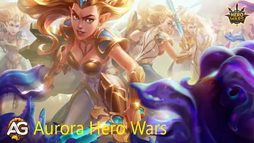
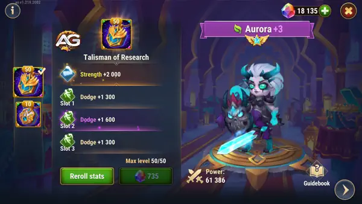
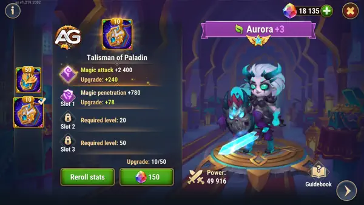
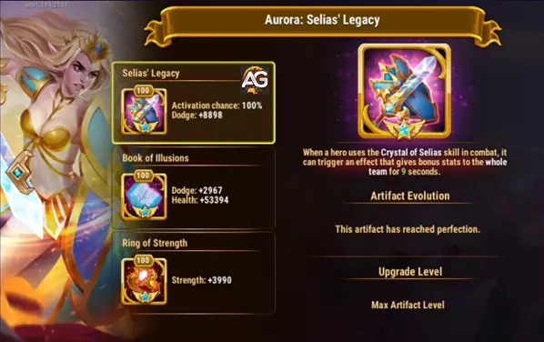
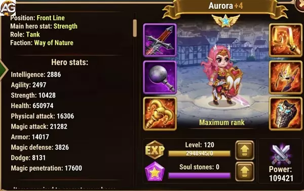

Aurora, a luz protetora de Riversar, é uma força imponente em Hero Wars Alliance. Sua história inspiradora e habilidades formidáveis a tornam uma adição valiosa a qualquer equipe.
Ao entender suas habilidades e estratégias para maximizar seu potencial, os jogadores podem desbloquear todo o poder desta paladina e conduzir sua equipe à vitória em batalhas épicas contra as forças da escuridão.
Descubra o potencial incomparável de Aurora como tanque em Hero Wars Alliance! Mergulhe em sua história inspiradora e domine as estratégias essenciais para aproveitar sua resiliência e habilidades de proteção, transformando-a em uma poderosa força contra ataques inimigos. Desvende os segredos de transformar a luz de Aurora em um escudo para sua equipe.

Ilustração de Aurora do jogo Hero Wars Alliance, desenvolvido pela Nexters.
Estatísticas da Aurora em Hero Wars Alliance
Estatísticas Principais da Aurora
Atributos Principais
Detalhes
Posição:
Linha de Frente
Função:
Tanque
Estilo de Jogo:
Tanque, Controle
Estatísticas principais:
Força
Facção:
Natureza
Como conseguir:
Eventos, baú heroico, campanha
Tier List 2025
Tier List 2025
Ranque
Tier List Geral:
A+
Tier List de Hidra:
A
A Luz Protetora: Desvendando o Potencial de Aurora em Hero Wars Alliance
No vasto universo de Hero Wars Alliance, onde a batalha entre as forças da luz e da escuridão se desenrola, a presença de Aurora brilha como uma estrela guia. Sua história, repleta de coragem e devoção, a transformou em uma das mais poderosas paladinas de Riversar. Neste tutorial, exploraremos a jornada de Aurora e as estratégias essenciais para dominar seu potencial como tanque supremo.
História da Aurora
Desde tenra idade, Aurora foi atraída pela luz. Movida por uma determinação incomum, ela deixou sua casa em busca de um destino maior. Sua jornada a levou aos domínios de Riversar, onde recebeu a honra de se tornar uma paladina. Assumindo o papel de protetora e guia de seu povo, Aurora se tornou uma luz brilhante em tempos sombrios, inspirando esperança e coragem em todos que cruzavam seu caminho.
Estratégia de Como Usar Aurora
Como o principal tanque da facção da natureza, Aurora se destaca por sua incrível resistência e habilidades de proteção. Sua capacidade de absorver 80% do dano mágico recebido, convertendo-o em dano para o time inimigo, a torna uma fortaleza inabalável no campo de batalha. Esta vantagem única não apenas protege os aliados, mas também inflige danos significativos aos adversários.
Além disso, Aurora possui a habilidade de atordoar os inimigos próximos, fornecendo uma janela de oportunidade valiosa para sua equipe ganhar vantagem tática e lançar ataques decisivos. Essa capacidade de controlar o campo de batalha, especialmente contra os tanques inimigos de linha de frente, é crucial para determinar o curso da batalha a favor de sua equipe.
Embora Aurora possa não ser tão temida em Hero Wars Alliance como na versão web, sua presença ainda é formidável. Ela permanece como uma das melhores escolhas para investimento e essencial para fortalecer qualquer equipe.
Maximizando o Potencial de Aurora
Posicionamento Estratégico: Coloque Aurora na linha de frente para absorver o máximo de dano possível e proteger os aliados mais vulneráveis. Sua resistência excepcional permite que ela lidere o ataque e mantenha a pressão sobre os inimigos.
Sincronização de Habilidades: Aproveite ao máximo a capacidade de atordoamento de Aurora, sincronizando-a com os ataques de sua equipe para maximizar o impacto. Use o atordoamento para interromper habilidades importantes do inimigo ou para criar aberturas para ataques decisivos.
Combinações Estratégicas: Explore combinações de equipe que complementem as habilidades de Aurora. Heróis que possuem habilidades de cura ou defesa podem aumentar ainda mais sua durabilidade, enquanto aqueles com alto dano podem capitalizar nos momentos de fraqueza do inimigo criados por seus atordoamentos.
Gerenciamento de Energia: Esteja atento ao gerenciamento de energia de Aurora para garantir que ela possa usar suas habilidades quando mais necessárias. Equilibre o uso de suas habilidades de absorção de dano e atordoamento para garantir um impacto constante no campo de batalha.
Guia Talismã da Pesquisa da Aurora
Com o Talismã da Pesquisa, Aurora ganhará 80.000 pontos adicionais de vida e 6.600 pontos de esquiva, totalizando 14.131 pontos de esquiva.
Essa melhoria significativa em seus atributos aumentará muito a sobrevivência e eficácia de Aurora em batalhas, permitindo que ela se sinergize bem com equipes focadas em esquiva, especialmente quando combinada com Dante.
Atributos do Talismã da Pesquisa
Slot
Estatística
Pontos
0
Força
+2000
1
Esquiva
+2200
2
Esquiva
+2200
3
Esquiva
+2200

Aurora com o Talismã da Pesquisa, Hero Wars.
O Segundo Talismã de Aurora: O Talismã do Paladino
O segundo talismã de Aurora, o Talismã do Paladino, transforma seu papel ao aumentar seu ataque mágico e fornecer penetração mágica, tornando-a muito mais eficaz como um tanque mágico com fortes capacidades ofensivas. Esse talismã é ideal para construir equipes agressivas voltadas para magos, onde os atributos mágicos aumentados de Aurora podem aumentar significativamente seu dano. A penetração mágica permite que ela contorne as defesas mágicas dos inimigos, garantindo que suas habilidades tenham mais impacto nas batalhas.
Esse talismã funciona excepcionalmente bem em sinergia com composições focadas em magos, especialmente com heróis como Mojo e Alvanor. Nessas equipes, o Talismã do Paladino permite que Aurora sirva não apenas como uma defensora da linha de frente, mas também como uma séria ameaça aos oponentes, amplificando o potencial de dano mágico da equipe. Essa configuração é especialmente eficaz em equipes baseadas na Natureza ou em outras composições onde o poder mágico de Aurora pode ser maximizado, criando um equilíbrio forte entre defesa e ataque.
Considerando que equipes baseadas em esquiva são populares no Hero Wars Mobile, o Talismã do Paladino oferece uma excelente alternativa, permitindo que os jogadores direcionem Aurora para um papel mais agressivo conforme as necessidades da equipe. Esse talismã não é difícil de obter durante os dias de eventos, tornando-o acessível para jogadores que querem uma opção de tanque versátil e focada em magia em sua formação.

Aurora com o Talismã do Paladino, Hero Wars.
Pontos Positivos e Negativos de Aurora
Pontos Positivos
Pontos Positivos
Atordoa inimigos próximos
Causa dano Mágico
Absorve dano mágico e transforma em dano
Tem bastante esquiva contra dano físico
Pontos Negativos
Pontos Negativos
Pouca defesa de armadura
Não tem artefato Arma de Armadura
Aurora Prioridades de Evolução
Glifos
Nos glifos de Aurora priorize esquiva e depois força, pois força é sua estatística principal e o cálculo de porcentagem de esquiva é feito sobre a quantidade de atributo principal do herói mais a quantidade de esquiva. Em terceiro lugar, suba vida para ganhar mais durabilidade e também deixar a sua quarta habilidade mais forte. Por último suba perfuração mágica e ataque mágico.
Prioridades
Glifos
Aumento de estatísticas
1º
Esquiva
+1120
2º
Vida
+30800
3º
Força
+560
4º
Perfuração Mágica
+3360
5º
Ataque Mágico
+3360
Artefatos
Nos artefatos se Aurora priorize o livro para ganhar mais vida e esquiva, depois o anel para ganhar mais vida e subir o atributo principal e por último a arma para dar esquiva para o time todo quando ativado.
Prioridades
Artefatos
Aumento de estatísticas
1º
Livro
Esquiva +2967 Vida +53394
2º
Anel
Força +3990
3º
Arma Legado de Selias
Esquiva +8898

Artefatos de Aurora no nível máximo, Hero Wars Mobile.
Visuais
Nos visuais de Aurora priorize esquiva para times com Octávia e Armadura para outros tipos de times. Depois suba vida e força para ganhar durabilidade e por último perfuração mágica para causar mais dano.
Prioridades
Visuais
Aumento de estatísticas
1º
Esquiva
+2960
2º
Armadura
+10650
3º
Vida
+106645
4º
Vida
+106645
5º
Força
+1365
6º
Perfuração Mágica
+10560

Aurora com visual Romântico, Hero Wars Mobile.
Aurora vs Hidras
Aurora não é um grande herói contra as hidras, mas pode ajudar em times secundários contra hidras mágicas, sendo capaz de fazer um dano razoável e bom.
É importante destacar as habilidades únicas de Aurora e como utilizá-las efetivamente durante o combate:
1. Cristal de Selias
Esta habilidade é crucial para causar dano em área, atingindo todos os inimigos ao redor do ponto de impacto. Seu dano é calculado com base no Ataque Mágico e no nível da habilidade.
2. Ataque Cristalino
Além de causar dano, esta habilidade também possui a capacidade de atordoar um alvo próximo. É importante notar que a chance de atordoamento é reduzida se o nível do alvo estiver acima de 120.
3. Luz Perfurante
Uma habilidade de ataque em linha reta que causa dano a todos os inimigos em seu caminho. Seu dano é calculado com base no Ataque Mágico e no nível da habilidade.
4. Halo do Arco-Íris
Esta habilidade passiva proporciona a Aurora um escudo que absorve parcialmente o dano mágico. Quando o escudo absorve uma certa quantidade de dano, ele explode, causando dano aos inimigos próximos. O quanto o escudo absorve é determinado pelo nível da habilidade.
Ao dominar o uso dessas habilidades e seguir as estratégias de evolução de Aurora, você poderá fortalecer sua equipe e enfrentar desafios cada vez maiores em Hero Wars Alliance.
Continue explorando e experimentando diferentes combinações e táticas para desbloquear todo o potencial desta incrível paladina. Lembre-se sempre de adaptar suas estratégias de acordo com o contexto da batalha e das habilidades dos seus adversários.
Com determinação e prática, você poderá conduzir sua equipe à vitória e escrever seu próprio legado no vasto universo de Hero Wars Alliance. Boa sorte em suas aventuras!
Conclusão e Considerações Finais
Ao final deste tutorial sobre Aurora em Hero Wars Alliance, esperamos que você tenha adquirido uma compreensão mais profunda das habilidades, estratégias e potencial desta poderosa paladina. Com as dicas fornecidas, você poderá maximizar o desempenho de Aurora em sua equipe e conduzi-la à vitória em batalhas épicas contra as forças da escuridão.
Sugestões de Vídeo:
História da Aurora Mini Game Hero Wars
Deixe Sua Opinião!
Você gostou das nossas dicas do Guia da Aurora? Há algo que não entendeu ou gostaria de sugerir mudanças? Convidamos você a se juntar à nossa sessão de comentários na página do Alexandre Games Blog. Não hesite em expressar sua opinião, clarificar suas dúvidas e compartilhar sua sugestões. Clique no botão abaixo para começar:
 Alvanor
Alvanor Arachne
Arachne Chabba
Chabba